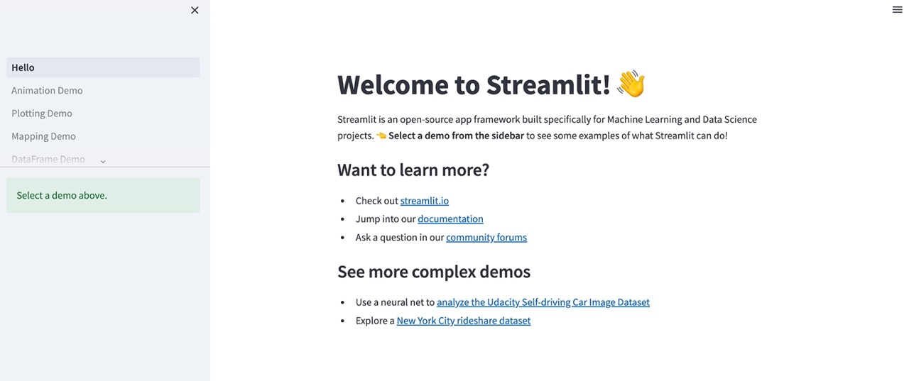
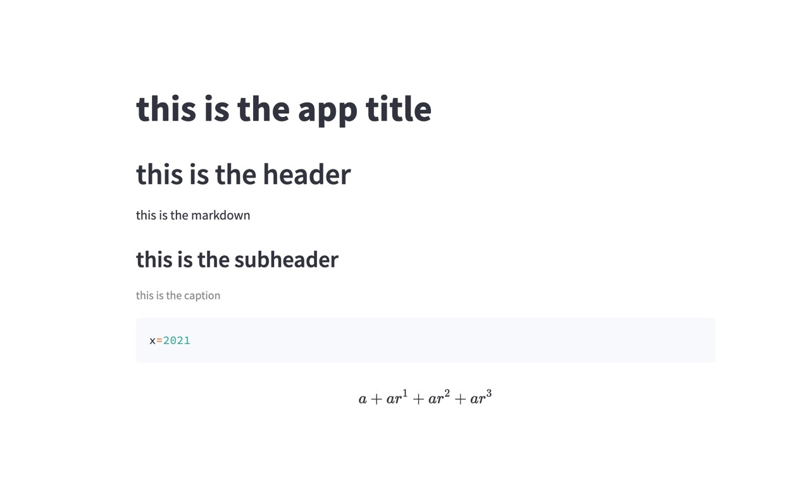

Streamlit 소개
treamlit은 Python으로 데이터 시각화 및 웹 애플리케이션 개발을 간단하게 할 수 있게 해주는 라이브러리입니다. 특히, 데이터 과학자나 머신 러닝 엔지니어들이 머신 러닝 모델의 결과를 쉽게 공유하고 데모를 만들 수 있도록 해줍니다.
Streamlit은 다음과 같은 이점을 제공합니다.
- 간편한 구현: Streamlit은 기본적인 웹 프레임워크와 비교하여 훨씬 적은 코드로 애플리케이션을 구현할 수 있습니다.
- 반응성: Streamlit은 실시간으로 변경 사항을 업데이트하고, 자동으로 새로고침합니다.
- 시각화: Streamlit은 matplotlib, bokeh, plotly 등과 같은 인기 있는 시각화 라이브러리와 함께 사용할 수 있습니다.
- 대화형: Streamlit은 사용자 입력에 따라 결과를 동적으로 업데이트하고 다양한 인터랙티브 요소를 포함할 수 있습니다.
Streamlit을 사용하면 머신 러닝 모델의 결과를 쉽게 공유하고, 데모를 만들어내는 등 다양한 용도로 사용할 수 있습니다. 또한 Streamlit은 Python으로 작성되어 있기 때문에, Python을 다룰 수 있다면 쉽게 사용할 수 있습니다.
Streamlit 설치
$ pip install streamlit
streamlit의 hello 앱을 실행합니다.
$ streamlit hello
👋 Welcome to Streamlit!
If you’d like to receive helpful onboarding emails, news, offers, promotions,
and the occasional swag, please enter your email address below. Otherwise,
leave this field blank.
Email:
You can find our privacy policy at https://streamlit.io/privacy-policy
Summary:
- This open source library collects usage statistics.
- We cannot see and do not store information contained inside Streamlit apps,
such as text, charts, images, etc.
- Telemetry data is stored in servers in the United States.
- If you'd like to opt out, add the following to ~/.streamlit/config.toml,
creating that file if necessary:
[browser]
gatherUsageStats = false
Welcome to Streamlit. Check out our demo in your browser.
Local URL: http://localhost:8501
Network URL: http://192.168.0.74:8501
Ready to create your own Python apps super quickly?
Head over to https://docs.streamlit.io
May you create awesome apps!
For better performance, install the Watchdog module:
$ xcode-select --install
$ pip install wat
hello 앱 실행 결과는 아래 화면과 같습니다.

사용자 앱 실행
streamlit에서 제공하는 API를 이용해 출력에 사용할 구성을 적용합니다.
[app.py]
import streamlit as st
st.title ("app title입니다.")
st.header("header입니다.")
st.markdown("markdown입니다.")
st.subheader("subheader입니다.")
st.caption("caption입니다.")
st.code("x=2023")
st.latex(r''' a+a x^1+a x^2+a x^3 ''')
streamlit을 이용해 app.py을 실행합니다.
$ streamlit run app.py
브라우저(http://localhost:8501/)에 앱 실행결과가 출력됩니다.

Streamlit은 데이터 과학자나 머신 러닝 엔지니어들에게 매우 유용한 도구입니다. 빠르고 간편하게 애플리케이션을 만들 수 있으며, 사용자 입력에 따라 동적으로 업데이트되기 때문에 대화형 요소도 쉽게 추가할 수 있습니다. 또한 Python으로 작성되어 있기 때문에, Python을 다룰 수 있다면 누구나 쉽게 사용할 수 있습니다.